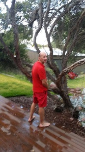
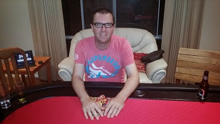

...with pre-game lubrication, ring ins and table/bedroom evacuations
|
| Position | Name | Points | Won |
|---|---|---|---|
| {{result.position}}{{positionSuffix(result.position)}} | {{result.name}} | {{result.points}} | {{result.cash | currency}} |
| Position | Name | Played | Won | Win Ratio | Ave Points | Ave Position | Points |
|---|---|---|---|---|---|---|---|
| {{$index + 1}}{{positionSuffix($index + 1)}} | {{result.name}} | {{result.played}} | {{result.won}} | {{result.won / result.played * 100| number:2}} % | {{result.points / result.played | number:2}} | {{result.averagePosition | number:2}} | {{result.points}} |
Seven of us managed to extricate ourselves from the Heath and head down the highway to the Peninsula. Four of us squeezed into the mercurial Bongo van with the poker table, beers and golf clubs and with Frosty Fruits in hand (kindly supplied by the peerless chaperon Mark V) even before leaving the Heath, we knew we were in for a memorable evening…
| Bongo van locked and loaded. Hi ho, hi ho...it's off to Rye we go |
And what a memorable evening it was…shortly after arriving at Dave’s shack in Rye, with card table erected, Mr Leopold arrives with a mystery guest (no, unfortunately not a gorgeous 18 year old Scandinavian blonde), who apparently is his golfing partner (who went by the name Craig, the builder). To say Mark and Craig were well lubricated is like saying Brian and Ben enjoy playing cards – a massive understatement!
Within 15 minutes of arriving, Mark had broken a beer glass, taken a slash off the end of the deck and sponged 4 beers off his poker mates. This was a portent of things to come.
After devouring some local pizzas, we sat down at 8pm and began proceedings, with Ben looking unusually pensive in his role as Brian’s stand in.
The first hand saw 4 players like what they were holding (apart from the beers). Mark V raised on the river and collected the pot. Shortly thereafter Steve pulls a full house on the river and after taking Mark “Wet Arse” Leopold along for the ride, collects the chips. But Mark was not to be deterred, on the next hand, with a massive pot, he beats Paul and Craig with 3 of a kind.
After several boring hands, Steve and Paul go at it. Paul collects a nice little pot with 2 pair. Then, what would unfortunately became a disturbing trend for the night, Mark L raised his right cheek and let rip with a shocking fart (described by the perpetrator himself as containing 70% sh!t particles) that cleared the table (and it wasn’t even 9pm).
|  |
| Class with a broken glass...... |
| and I hope the wet decking was from the rain? |
Perhaps still recovering from the Leopold odour, Mark V manages to christen the table with beer, to which his namesake says “You f#ckers should never drink!”
Back at the poker action, the next hand sees Ace, 2 Queens and 2 Jacks from the dealer. After some initial interest from several players around the table, it gets down to Mark L and Simon. Mark L bets $8K (easily the biggest bet of the evening to that point) and scares off Wombat, with Mark L holding trips (Jacks).
To this point Steve, Wombat and Mark L had been keen participants in the betting. This continued with Wombat collecting a tidy stack off Steve after a pair of 8s was drawn off the dealer, with Wombat’s two sevens too good for Steve’s two fives.
10pm rolls around and we have the first all in for the evening, Steve squaring off against Mark V. Steve collects the pot with three Kings vs Ace/King pairs for Mark V. Mark decides that sitting around watching is no fun and buys back in.
To everyone’s surprise, Mark L and Craig were still conscious at this point, especially the anal orifice of Mr Leopold. The table was cleared not less than 4 times during the evening as Mark refused to heed Paul’s advice to “take a dump and get rid of that sh!t”. After pleading that he had never played Texas holdem poker before, Craig was very quick to point out on several occasions that the big or small blinds had not been paid – either he was a quick learner or a conman from way back!
And he tried his best to con Steve into losing his chips. The dealer drew three Kings, a jack and eight. Both Steve and Craig managed a full house and we had our first (and only) split pot of the evening.
Perhaps it was the copious alcohol consumed at The National, but Mark L and Craig were lured into Wombat’s trap, each holding bugger all and losing to Wombat’s pair of kings, which added nicely to his stack of chips!
After several meandering hands, Mark V decides to go all in with the dealer cards being 9, Jack, 5, 10 and 7. Craig has shown interest in the pot, but elects to fold after the river card, so Mark V survives to play another hand.
The next hand and Ben finally decides to join the betting (to this point, about 11pm, Ben had played 2 hands for the entire evening). Mark L and Craig perhaps had not noticed that Ben had not been enthused about his cards to this point and went along for the ride. ..Ben collected the sizeable pot after going all in and holding trip sixes vs Mark’s pair of 9s and Craig’s Ace/King. Craig is the first casualty of the evening.
Not fazed by his loss to Ben, Mark L goes all in against Wombat, which proved a good call with his pair of Aces too good for Wombat’s pair of Jacks. But it wasn’t too long before Wombat extracted his revenge, taking an even larger pot from Mark L after pulling two pair with the river card.
But you couldn’t keep Leopold (or his farts) down for long. He collected a tidy stash after Dave and Mark V liked their hands, with this hand being the killer blow for Mark V, who exited in 7th spot.
With midnight approaching, there were 6 players left and Ben was the chip leader. Ben decided to risk it all with a $15K bet with 8,3,6 on the flop. Ben holds Ace/King whilst Mark L likes his chances with two 4s. Ben draws an Ace on the turn card and never looks back, taking out Mark L.
With the blinds going up, it was becoming interesting to see who could last. Paul, after some strong early wins, had gone quiet, but decided to go all in against Wombat. Paul was only holding Jack/7, whilst Wombat had a pair of Queens. The dealer then draws two Jacks and Paul collects the pot.
But you cannot keep a good Wombat down…not long after losing to Paul, he entices Dave and Steve to go all in, and collects their chips with three sevens. And then there were 3 left - Wombat, Paul and Ben.
Several hands pass before Wombat entices Paul to go all in. Wombat comes up the victor with sh!t cards (4/3), and Paul bows out in third place.
|  |
| Another flying start from the patient champion Ben |
So the final combatants were Wombat and Ben, with Ben holding a significant chip advantage. With the blinds reaching $10K and $20K, the betting followed a predictable pattern – the big blind was more often than not the winner. After about 10 hands, Ben took out Wombat with a straight.
It was now after 1am and most of us needed some shut eye…unfortunately for Mark V who was sharing a room with Wombat, his sleep was interrupted by what could only be described as un-human like noises…Mark V has supplied audio recordings if you wish to relive this nightmare!
Congratulations to Ben for winning (seems like this has happened before!)…and also managing to keep the rest of us on track and dealing out the chips.
With the next event at Mark L’s house, it will be interesting to see if his garden survives the experience…